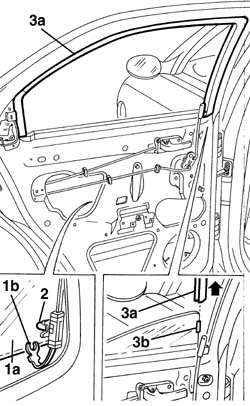
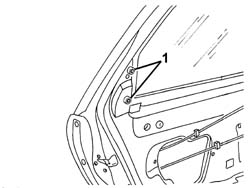
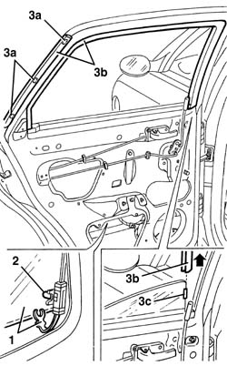

7010D18 rear side door descending window glass channel r r
- Path
- Procedures > 70 FITTINGS > 7010 PASSENGER COMPARTMENT REAR SIDE DOORS > 7010D rear side door window glasses > 7010D18 rear side door descending window glass channel r r
- Kind
- repair procedure (removal / refitting; the operation number is the code)
- Applies to
- all engines; all production periods
- Interactive page
- https://sloeber94.github.io/elrnDB-a156/en/#/3238666
Applies to: all engines; all production periods
 Removing
Removing
 Refitting
Refitting7010C44 interior handle panel - r r
7010E38 rear side door interior handle-r r
7010E34 inner or outer panel on rear side door frame - rr
7010D38 rear side door manual window mechanism handle/ring-nut r r
7010E22 grille for radio system on rear door panel (one) lh or rh - r r
5570T96 rear side speaker - r r
7010E11 lh or rh rear door inner panel - r+r with fouling parts removed
7010A04 rear side door water guard protection - r r or arrange with door panel removed
7010C10 rear door outer handle - r r with door panel removed
7010D26 rear side descending window glass scraper (outer) r r
7010D30 rear side descending window glass scraper (inner) r r
1. Open the window (1a) about 1/3 of the way, then disconnect the window safety retainer (1b).
2. Open the window about 2/3 of the way, then disconnect it from the drive pin.
3. Lower the window to the end of its travel by hand, then prise out window channel (3a), beginning from the rear end. Retaining element (3b) is fitted in the front part of the window. The channel must therefore be taking out by pulling upward.

Applies to: all engines; all production periods
Refitting
RemovingCheck that the channel is undamaged.
Fit the window channel.
Take care when refitting the fastener in the channel.
Open the window about 2/3 of the way, then connect it to the drive pin.
Open the window about 1/3 of the way, then connect the window safety retainer.
7010D30 rear side descending window glass scraper (inner) r r
7010D26 rear side descending window glass scraper (outer) r r
7010C10 rear door outer handle - r r with door panel removed
Check that the window works properly.
7010A04 rear side door water guard protection - r r or arrange with door panel removed
7010E11 lh or rh rear door inner panel - r+r with fouling parts removed
5570T96 rear side speaker - r r
7010E22 grille for radio system on rear door panel (one) lh or rh - r r
7010D38 rear side door manual window mechanism handle/ring-nut r r
7010E34 inner or outer panel on rear side door frame - rr
Applies to: all engines; all production periods; only with equipment: Station Wagon
Removing
Refitting7010C44 interior handle panel - r r
7010E38 rear side door interior handle-r r
7010E34 inner or outer panel on rear side door frame - rr
7010D38 rear side door manual window mechanism handle/ring-nut r r
7010E22 grille for radio system on rear door panel (one) lh or rh - r r
5570T96 rear side speaker - r r
7010E11 lh or rh rear door inner panel - r+r with fouling parts removed
7010D26 rear side descending window glass scraper (outer) r r
7010A04 rear side door water guard protection - r r or arrange with door panel removed
7010D30 rear side descending window glass scraper (inner) r r
7010E94 frame reinforcement bracket on one rear door one lh or rh r r
1. Loosen the outer handle bolts.

Applies to: all engines; all production periods; only with equipment: Station Wagon
1. Lower the window until you can disconnect its safety retainer.
2. Disconnect the window glass from the drive pin.
3. Lower the window by hand to the end of its travel, then disconnect adhesive elements (3a) and prise out the entire glass channel (3b). Fastener (3c) is fitted in the front part of the glass. The channel must therefore be taken outby pulling upward.

Applies to: all engines; all production periods; only with equipment: Station Wagon
Refitting
RemovingCheck that the channel is undamaged.
Use heptane to clean the area where the adhesive elements are stuck.
Fit the descending glass channel and bond the adhesive elements in place. Take care when refitting the adhesive elements in the channel.
Open the window about 2/3 of the way, then connect it to the drive pin.
Open the window about 1/3 of the way, then connect the window safety retainer.
7010E94 frame reinforcement bracket on one rear door one lh or rh r r
7010D30 rear side descending window glass scraper (inner) r r
7010A04 rear side door water guard protection - r r or arrange with door panel removed
7010D26 rear side descending window glass scraper (outer) r r
Check that the window works properly.
7010E11 lh or rh rear door inner panel - r+r with fouling parts removed
5570T96 rear side speaker - r r
7010E22 grille for radio system on rear door panel (one) lh or rh - r r
7010D38 rear side door manual window mechanism handle/ring-nut r r
7010E34 inner or outer panel on rear side door frame - rr
Topics linked from this page (13)
- 5570T96 rear side speaker - r r
- 7010A04 rear side door water guard protection - r r or arrange with door panel removed
- 7010C10 rear door outer handle - r r with door panel removed
- 7010C44 interior handle panel - r r
- 7010D22 rear side door descending window glass guide (one) - r r with door panel (and support frame) removed
- 7010D26 rear side descending window glass scraper (outer) r r
- 7010D30 rear side descending window glass scraper (inner) r r
- 7010D38 rear side door manual window mechanism handle/ring-nut r r
- 7010E11 lh or rh rear door inner panel - r+r with fouling parts removed
- 7010E22 grille for radio system on rear door panel (one) lh or rh - r r
- 7010E34 inner or outer panel on rear side door frame - rr
- 7010E38 rear side door interior handle-r r
- 7010E94 frame reinforcement bracket on one rear door one lh or rh r r